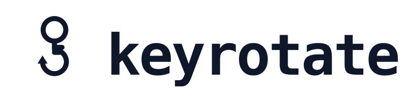

Trust & Safety
Stack v1.0 · Last reviewed:
keyrotate is a security tool. The five documents below explain what the CLI does and doesn't do with your secrets, how the binaries you install are built and verified, how to report a vulnerability if you find one, what the website collects, and what happens if something goes wrong. Together they form the project's trust stack.
The 5-document trust stack
What keyrotate does · what it never does · how secrets are handled in memory and on disk.
no telemetry · local-only 02 Supply Chain IntegrityHow the binaries are built · how to verify SHA256s · how to build from source.
reproducible builds 03 Vulnerability DisclosureCoordinated disclosure policy · what's in scope · how fast we acknowledge and fix.
90-day disclosure window 04 Data Handling NoticeWhat the website logs · what the CLI sends over the network · what we never collect.
GDPR / CCPA aligned 05 Incident Response PlanWhat counts as an incident · who responds · escalation · post-mortem disclosure.
public running logRelated legal documents
These trust documents complement the Privacy Policy and Terms of Service. The source is MIT-licensed; see the LICENSE in the repository.
Contacts
Operator: BotFlow Lab
- Security / vulnerability reports: GitHub Security Advisories (preferred) or security@keyrotate.dev
- Privacy: privacy@keyrotate.dev
- General: GitHub Discussions